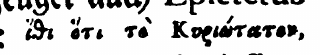
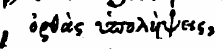

1.1 Zusammenfassung
Da die höchste Glückseligkeit in der wahren Erkenntnis Gottes besteht, (das ist aber das ewige Lesben 1, daß sie dich, daß du allein wahrer Gott bist, und den du gesandt hast, Jesus Christus erkennen,) so ist der wahre und richtige Verstand, den man sich von dem Ursprung und Grund dieser Erkenntnis zu machen hat, das Allernotwendigste, so man vor allen Dingen wissen und glauben muß.
Wer eine Kunst oder Wissenschaft zu erlangen begehrt, der ist zunächst um die Mittel bekümmert, durch welche solche Kunst oder Wissenschaft erlangt wird. Da wir nun dieses in natürlichen und irdischen Dingen tun sollen, wie viel mehr liegt uns ob, solches in geistlichen und himmlischen nicht zu unterlassen? Bei dieser wichtigen Sache sollten wir eine desto fleißigere Untersuchung anstellen Weil derjenige, welcher alsbald bei dem Eingang irrt, nicht so leichtlich wieder auf den rechten Weg zu bringen ist. Wer bei dem Antritt seiner Reise der rechten Strasse verfehlt, und wenn er vom festen Land abstößt, in dem allerersten Merkzeichen betrogen wird, der wird, je grösser seine Verwirrung ist, um so viel desto schwerer wieder auf den rechten Pfad zu bringen sein.
Wenn sich deshalb ein Mensch, aus Überzeugung seiner eigenen Unwürdigkeit und wegen des durch die geheimen Bestrafungen seines Gewissens verursachten Überdrusses seines Gemüts, und des zwar schwachen dennoch aber wirklich an sein Herz strahlenden Scheines des göttlichen Lichts, sich erst vornimmt, sich um die wahre Erkenntnis Gottes zu bewerben; so macht das ernstliche Verlangen, so er hat, von seiner gegenwärtigen Unruhe befreit zu werden, und das inbrünstige Seufzen und Stöhnen, sich seiner unordentlichen Lüfte und Leidenschaften entladen zu sehen, und in der gewissen Erkenntnis Gottes und Versicherung seiner Liebe und Huld gegen ihn, Ruhe und Frieden zu finden, sein Herz ganz weich und zart, und deshalb bereit einen jeden Eindruck anzunehmen. Und da er deshalb noch keinen rechten Unterschied zu treffen weiß, so nimmt er aus Übereilung alles an, was ihn nur für die gegenwärtige Zeit einige Linderung verschafft: Wenn er entweder aus Leichtgläubigkeit und Hochachtung, die er gegen gewisse Personen tragt, oder aus einer heimlichen Neigung zu demjenigen, was mit seinem natürlichen Zustand übereinkommt, auf einige Grundsätze oder Mittel gerät, wodurch er zur Erkenntnis Gottes zu gelangen vermeint, und sich deshalb in seinein eigenen Kreis herum dreht, so wird es schwer hergehen, ihn von denenselben, wenn sie auch noch so unrichtig sind, wieder abzubringen. Denn nachdem die erste Angst vorüber ist, wird er noch dreister; und weil alsdenn der Feind nicht weit zu sein pflegt, so erregt er einen falschen Frieden und ein gewisses Vertrauen, so durch das ungeneigte Gemüt, sich wieder in neue Zweifel oder die vormalige ängstliche Untersuchung einzulassen, nicht wenig gestärkt wird.
Dieses wird durch das Exempel der Pharisäer und Jüdischen Lehrer zur Genüge bestätigt, welche sich Christus am allermeisten widersetzten, weil sie durchaus nicht unwissende Leute angesehen sein wollten. Denn dieser eitle Läß-Dünkel, den sie von ihrem eigenen Wissen hatten, verhinderte sie an dem wahren Erkenntnis. Das gemeine Volk hingegen, welches mit den vorigen Grundätzen nicht so gar sehr eingenommen war, sich auch auf seine eigene Wissenschaft keineswegs so viel einbildete, ließ sich leichtlich zum Glauben bewegen. Daher es ihnen die Pharisäer vorwarfen, als sie sagten: Glaubt auch irgend ein Oberster oder Pharisäer an ihn sondern das Volk, daß nichts vom Gesetz weiß, ist verflucht 2. Es wird dieses auch durch die Erfahrung bei allen solchen zum Überfluss bezeugt, welche, wenn sie von dem Ruf, den ihnen die Gnade Gottes gebietet, heimlich gerührt werden, ihre Zuflucht zu falschen Lehrern nehmen; da denn das Mittel noch schlimmer ausschlägt als die Krankheit. Allermassen sie, anstatt dessen, daß sie Gott oder die zu ihrer Seligkeit nötigen Dinge erkennen sollten, falsche Meinungen von ihm in sich saugen, von welchen sich viel schwerer wieder losen ist, als weil das Gemüt gleichsam Tabula rasa oder eine noch reine, unbeschriebene Tafel bleibt. Denn diejenigen, die sich selbst weise dünken, sind viel schwerer zu gewinnen, als die ihrer Unwissenheit selbst überzeugt sind. So ist es auch ein eben so großer Kunstgriff der Satanischen Bosheit gegen das Menschliche Geschlecht, wenn dieser listige Seelenfeind demselben unrichtige Meinungen von Gott beibringt, als wenn er es von dessen Erkenntnis gänzlich abzuhalten sucht. Dieses findet nicht so leichtlich statt, pflegt auch verhasster zu sein; jenes aber hat jederzeit der Welt zu ihrem Verderben gereicht. Denn es ist schwerlich ein Volk in der Welt gewesen,daß nicht ein oder die andern Begriffe vom Gottesdienst gehabt hätte; so daß nicht von ihrer Verleugnung einer Gottheit, sondern von ihren Irrtümern und falschen Vorstellungen derselben,aller Götzendienst und Aberglauben der Welt hergerührt. Ja,daher hat die Atheisterey, oder Leugnung, daß ein Gott sei, selbst ihren Ursprung genommen. Denn da die mancherlei Meinungen von Gott und der Religion dergestalt mit den Mutmaßungen und ungewissen Urteilen der Menschen vermischt worden, so haben sie bei einigen die Meinung hervor gebracht, als ob gar kein Gott wäre. Dieses, und noch ein weit mehreres, so beigebracht werden möchte, kan sattsam bezeugen wie gefährlich es sei, es alsbald sei dieser ersten Stufe zu versehen. Alle, die nicht zur rechten Tür hineingehen, sind vor Diebe und Mörder zu halten.
Wie nötig und erwünscht solche Erkenntnis sei, welche zum ewigen Leben teitet, bezeugt auch Epicterus 3: in diesen vortrefflichen Worten:

wisse, daß der Hauptgrund der Gottseligkeit dieser ist,

richtige Meinungen und Begriffe von Gott zu haben.
Dieses habe ich demnach vor allen Dingen zum ersten Grund voraus zu legen für gut angesehen, und halte dafür, es werde keiner weiteren Erklärung und Verteidigung nötig haben, weil es fast einhellig von allen zugestanden wird. Nun pflege ich aber in den Dingen, die ausser Streit gesetzt sind, mich gerne der Kürze zu bedienen. Es ist eine Sache die sich eines jedweden Menschen Vernunft und Gewissen selbst anpreist. Daher ich mich zu dem nächstfolgenden Satz wende, welcher ob er schon nicht weniger gewiss ist, dennoch, durch die Bosheit des Satans und vieler Menschen Unwissenheit, weit mehr in Zweifel gezogen wird.
-
Joh. 17,3 “Dies aber ist das ewige Leben, daß sie dich, den allein wahren Gott, und den du gesandt hast, Jesus Christus, erkennen.” ↩︎
-
Joh. 7,48+49 “Hat wohl jemand von den Obersten an ihn geglaubt, oder von den Pharisäern? Diese Volksmenge aber, die das Gesetz nicht kennt, sie ist verflucht!” ↩︎
-
Epicterus Kap. 38. ↩︎